HangSpine · Apple Watch + iPhone
HangSpine 1.0.5 更新内容
1.0.5 是上线以来最大的一次更新：手表上能练指力板了，手机上有了训练计划和每周训练安排，还有一句话就能交代需求的 AI 教练；计数方式也更诚实了。下面逐屏说说变了什么。
免费与 Pro。HangSpine 免费下载，自带 100 次自动检测。升级 HangSpine Pro 解除上限，并把 AI 教练额度从每天 5 问提高到 50 问（月付）或 100 问（买断）——可按月订阅或一次性买断。手动计时、历史记录、统计和 iCloud 同步始终免费。之前已经买过 HangSpine？你就是创始会员：终身 Pro，无需任何操作。
美国区 Pro 为每月 3.99 美元或一次性 19.99 美元，其他地区以 App Store 为准。
一次悬垂，就是一次
"If, for example, you're already happy doing a 60-second hang three times a day, you won't want to use an app that will only let you record this as 12 15-second hangs"——2026 年 10 月，一位 Reddit 用户
这是计数模型的问题，不是传感器看错了：旧版在一次悬垂跨过目标时就把它切开。1.0.5 不会再这样切：自由悬垂时，4 秒内的换手仍算同一次，跨过目标只提示一次。接下来怎么记由你决定。「目标达成后自动结束并休息」默认开启：到达目标就结束本组，并开始休息倒计时（30–180 秒）；关掉它，一次连续悬垂就按完整时长记为一次——60 秒，就是 60 秒。单次悬垂目标可设 5–180 秒。
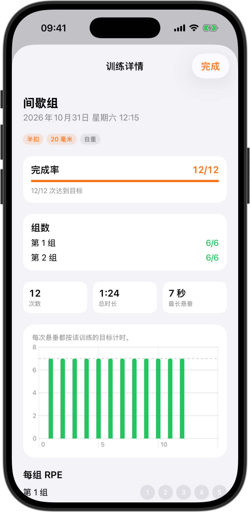
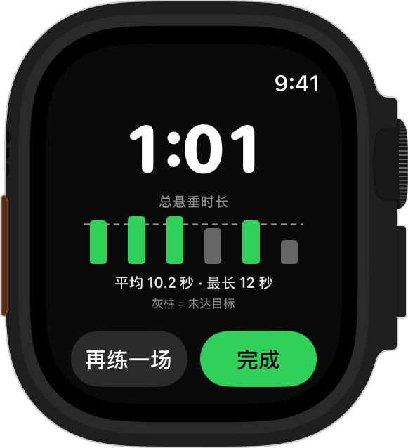
手表上的指力板训练
手表现在不只计自由悬垂，也能跑指力板方案：间歇组、最大悬垂和自定义训练段，带休息提示。训练时，屏幕会告诉你这是第几组、第几次，每次休息都有倒计时。每场训练都会记录握法、边条（毫米）和配重（公斤/磅）。免费方案的 100 次自动检测用完后，手表仍会提供手动模式：由你自己结束每一次悬垂，这场训练照样记进同一份历史。
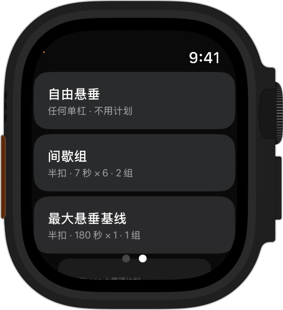
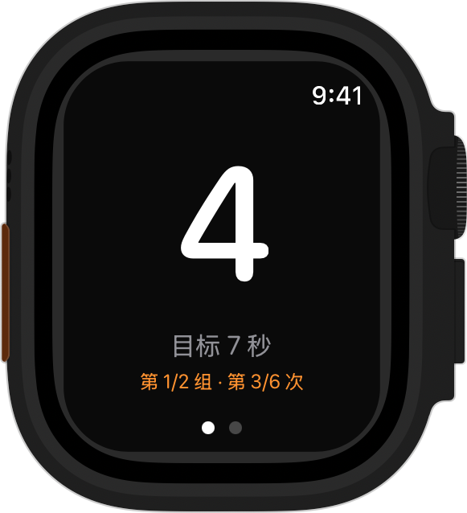
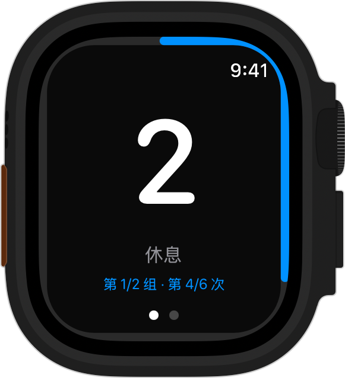
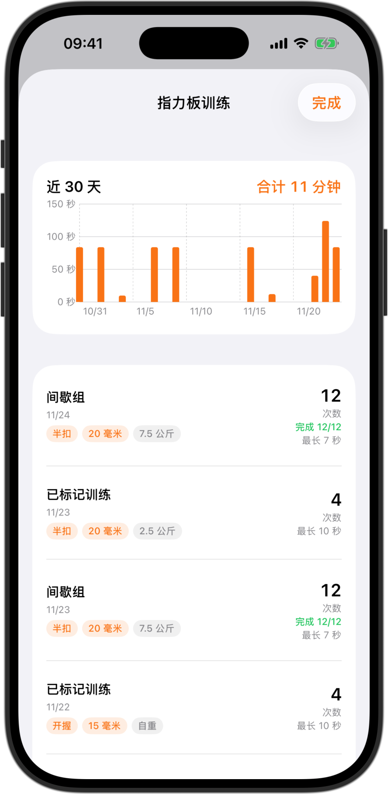
更清楚的准备页
准备页只放一件你可能会改的事——每次目标——和一枚开始按钮。转动表冠改目标，下一页列出你的计划。点开始，倒计时之后手表做的还是它一直在做的事：抓杠开始，松手停止。悬垂时屏幕常亮，不需要带手机。
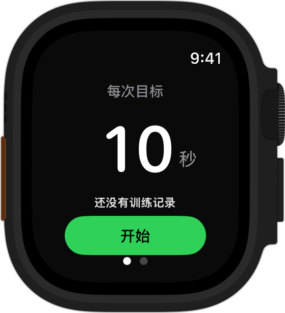
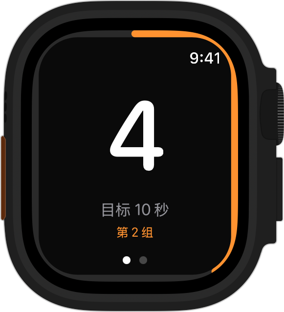
手机上的档案、训练安排和 AI 教练
手机端有三个标签页：今天（打开时停在这里）、看板和我的。攀岩档案记着你的项目、难度（Ewbank、YDS、V 难度或 Font 难度）、板型和训练重点，身高体重想填再填。「看板」会排出每周训练安排：现在在第几周、接下来练哪种握法、哪些已经完成。
AI 教练只需要一句话。说说你这周的想法，它会给出一份计划或一个多周的周期，数字都能改；可以直接应用，也可以在编辑器里微调。它默认是本地模式：答案来自设备上的规则，什么都不会发出。云端 AI 是可选的，每条回答都标着本地教练或云端 AI；每天有额度——免费 5 问，Pro 月付 50 问，Pro 一次性买断 100 问。本地教练从不占用额度。
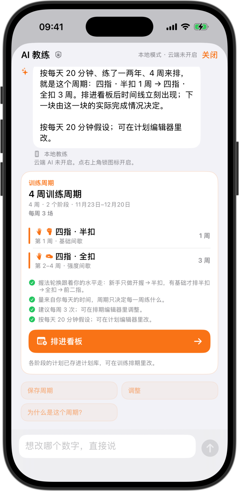
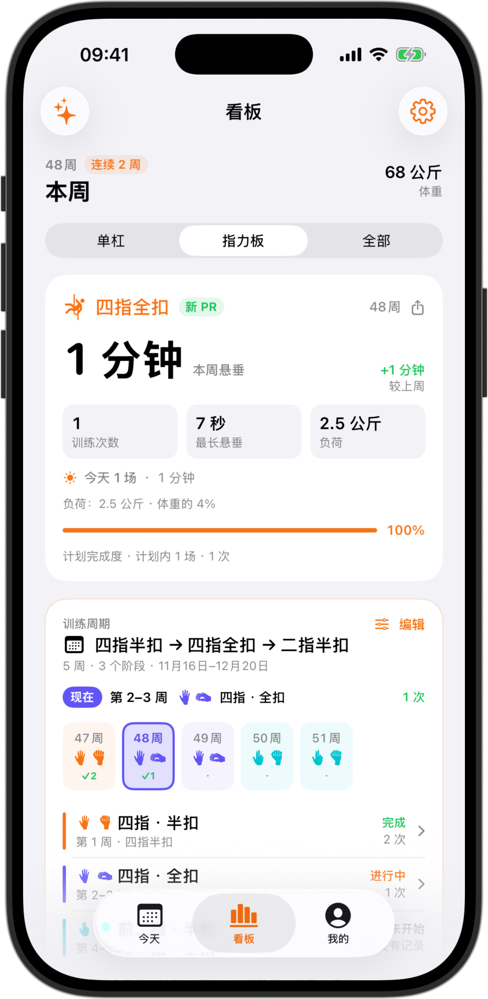
老老实实地说"发送到手表"
训练周期开始后，「今天」页面的主按钮是发送到手表。它保存计划、发送计划，并告诉你真实的送达状态。它不会在手表上开始训练。没有配对手表，它会这么说；配对了但没装手表 App 或手表暂时连不上，它也会这么说。开始仍然发生在手腕上：抬腕，抓杠，松手。
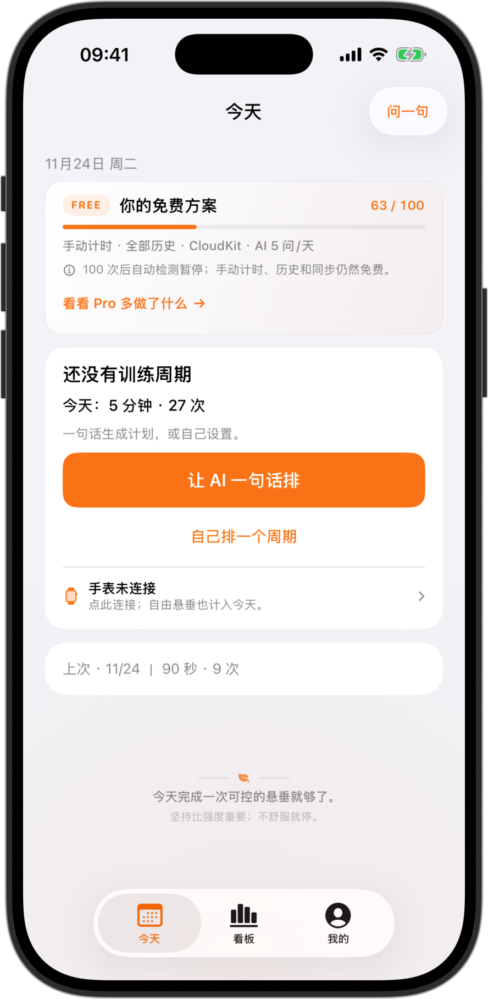
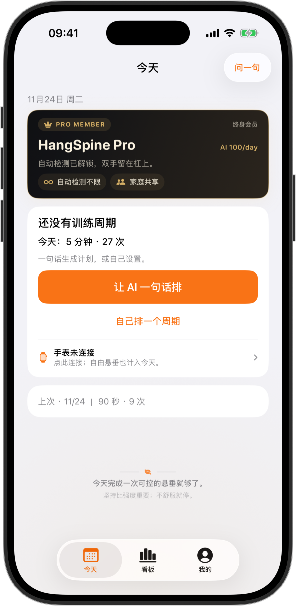
值得回头看的统计
「今天」一屏看清当天和本周；「看板」放趋势和 26 周热力图。指力板复盘里，每场训练都有握法、边条、配重和逐次悬垂的柱状图，练完还能补备注和每组 RPE（1–5）。训练记录可以导出为 CSV（设置 → 数据 → 导出训练记录（CSV））；训练日下午 6 点可以收到一条本地提醒（设置 → 提醒 → 训练提醒）。训练记录通过你自己的 iCloud 同步，重装或换新手机都能找回来。
隐私，一段话说完
训练记录保存在你的 iPhone 与 Apple Watch 上；登录了 iCloud 的话，还在你自己的 iCloud 私有数据库里。没有账号。AI 教练默认是本地模式，什么都不发。只有你打开云端 AI 并要计划时，你写的那句话、训练档案、当前的计划和训练安排，以及近期训练的摘要，才会发送到计划服务。网址、邮箱地址和中国大陆手机号会在设备上先行去除。会保留一份脱敏后的当前原话，最多 90 天，用于改进教练。详见隐私政策。
这款 App 是训练计时与记录工具，不是医疗设备。这里的任何内容都不是医疗建议。请始终遵循医生的建议。
下载 HangSpine
HangSpine 已在 App Store 上架，支持 iPhone 和 Apple Watch。有疑问？支持页讲了怎么开始、免费方案和 Pro；首页是整个 App 的概览。
下载 HangSpineApp Store · 免费下载 · Pro 可选